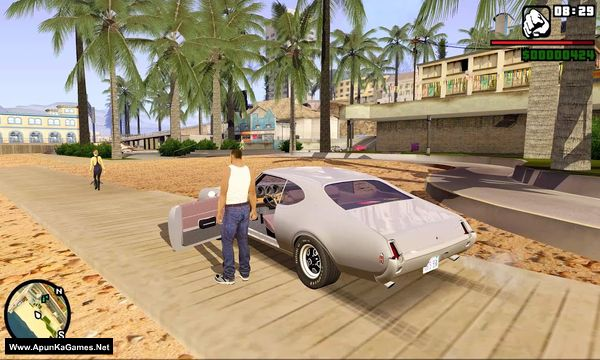
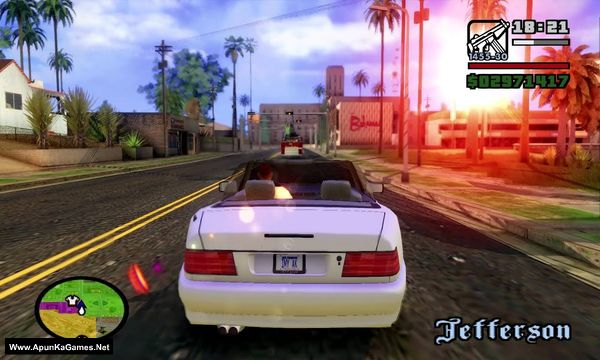
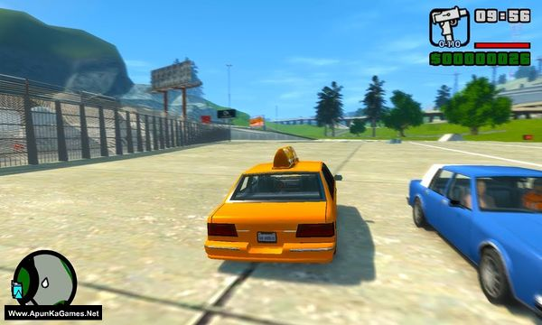

gta san adress – Overview – Free Download – PC – Compressed – Specs – Screenshots
Type of game: Action, Adventure, Open World
GTA San Andreas San Andreas Remastered Mod (1.3 GB) is an open world video game. Developed and published by Rockstar North, Rockstar Games. It was released on August 13, 2018 for Windows. Grand Theft Auto: San Andreas is an action-adventure game with role-playing and stealth elements. Structured similarly to the previous two games in the series, the core gameplay consists of elements in a third-person shooter and a driving game, affording the player a large, open world environment in which to move around. On foot, the player’s character is capable of walking, running, sprinting, swimming, climbing and jumping as well as using weapons and various forms of hand-to-hand combat. The player can drive a variety of vehicles, including automobiles, buses, semis, boats, fixed-wing aircraft, helicopters, trains, tanks, motorcycles and bikes. The player may also import vehicles in addition to stealing them
-
OS: Windows 2000/XP/7
-
Processor: Core i3
-
Graphics Card: NVIDIA GeForce GT 470 2GB or AMD Radeon HD 7850 2GB
-
DirectX: Version 9.0c
-
RAM: 4 GB



How to Dowenload game
gta vice city mod Download

Game Size: 4 GB